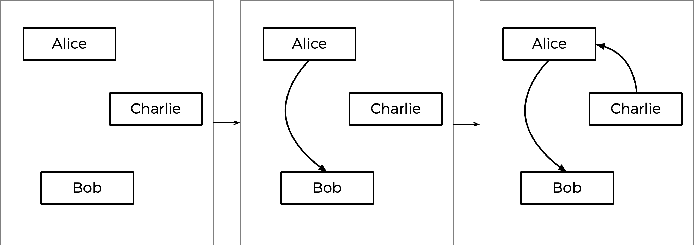

Tideman
Para este programa, você implementará um programa que realiza uma eleição Tideman, conforme abaixo.
./tideman Alice Bob Charlie
Number of voters: 5
Rank 1: Alice
Rank 2: Charlie
Rank 3: Bob
Rank 1: Alice
Rank 2: Charlie
Rank 3: Bob
Rank 1: Bob
Rank 2: Charlie
Rank 3: Alice
Rank 1: Bob
Rank 2: Charlie
Rank 3: Alice
Rank 1: Charlie
Rank 2: Alice
Rank 3: Bob
Charlie
Contexto
Em eleições de pluralidade (plurality elections), que seguem um algoritmo muito simples para determinar o vencedor de uma eleição: cada eleitor tem um voto, e o candidato com a maioria dos votos vence.
Mas a votação de pluralidade tem algumas desvantagens. O que acontece, por exemplo, em uma eleição com três candidatos, e as cédulas abaixo são lançadas?

Uma votação de pluralidade aqui declararia um empate entre Alice e Bob, já que cada um tem dois votos. Mas essa é a resposta certa?
Existe outro tipo de sistema de votação conhecido como sistema de votação classificada. Em um sistema de votação classificada, os eleitores podem votar em mais de um candidato. Em vez de votar apenas em sua escolha principal, eles podem classificar os candidatos por ordem de preferência. As cédulas resultantes podem parecer assim:

Aqui, cada eleitor, além de especificar seu candidato de primeira escolha, também indicou suas segunda e terceira escolhas. E agora, o que antes era uma eleição empatada poderia ter um vencedor. A corrida estava originalmente empatada entre Alice e Bob, então Charlie estava fora da disputa. Mas o eleitor que escolheu Charlie preferiu Alice a Bob, então Alice poderia ser declarada a vencedora aqui.
A votação classificada também pode resolver mais uma possível desvantagem da votação de pluralidade. Dê uma olhada nas seguintes cédulas.

Quem deveria vencer essa eleição? Em uma votação por pluralidade em que cada eleitor escolhe apenas sua primeira preferência, Charlie vence esta eleição com quatro votos em comparação com apenas três de Bob e dois de Alice. (Note que, se você estiver familiarizado com o sistema de votação instantânea, Charlie também vence aqui sob esse sistema). Alice, no entanto, poderia razoavelmente argumentar que ela deveria ser a vencedora da eleição em vez de Charlie: afinal, dos nove eleitores, a maioria (cinco deles) preferiu Alice em vez de Charlie, então a maioria das pessoas ficaria mais feliz com Alice como vencedora em vez de Charlie.
Alice é, nesta eleição, a chamada "vencedora de Condorcet" da eleição: a pessoa que teria vencido qualquer confronto direto contra outro candidato. Se a eleição tivesse sido apenas entre Alice e Bob, ou apenas entre Alice e Charlie, Alice teria vencido.
O método de votação de Tideman (também conhecido como "ranked pairs") é um método de votação classificada que garante produzir o vencedor de Condorcet da eleição, se houver um.
Em geral, o método de Tideman funciona construindo um "gráfico" de candidatos, onde uma seta (ou seja, uma aresta) do candidato A para o candidato B indica que o candidato A vence contra o candidato B em um confronto direto. O gráfico para a eleição acima, então, seria semelhante ao abaixo.

A seta de Alice para Bob significa que mais eleitores preferem Alice a Bob (5 preferem Alice, 4 preferem Bob). Da mesma forma, as outras setas significam que mais eleitores preferem Alice a Charlie e mais eleitores preferem Charlie a Bob.
Ao analisar este gráfico, o método Tideman diz que o vencedor da eleição deve ser a "fonte" do gráfico (ou seja, o candidato que não tem seta apontando para ele). Neste caso, a fonte é Alice - Alice é a única que não tem seta apontando para ela, o que significa que ninguém é preferido de maneira direta a Alice. Alice é declarada, portanto, a vencedora da eleição.
No entanto, é possível que, quando as setas são desenhadas, não haja um vencedor de Condorcet. Considere as cédulas abaixo.

Entre Alice e Bob, Alice é preferida sobre Bob por uma margem de 7-2. Entre Bob e Charlie, Bob é preferido sobre Charlie por uma margem de 5-4. Mas entre Charlie e Alice, Charlie é preferido sobre Alice por uma margem de 6-3. Se desenharmos o gráfico, não há fonte! Temos um ciclo de candidatos, onde Alice vence Bob, que vence Charlie, que vence Alice (como em uma partida de pedra-papel-tesoura). Neste caso, parece que não há maneira de escolher um vencedor.
Para lidar com isso, o algoritmo Tideman deve ter cuidado para evitar a criação de ciclos no gráfico de candidatos. Como ele faz isso? O algoritmo bloqueia primeiro as arestas mais fortes, já que essas são provavelmente as mais significativas. Em particular, o algoritmo Tideman especifica que as arestas de confronto devem ser "travadas" no gráfico uma de cada vez, com base na "força" da vitória (quanto mais pessoas preferem um candidato em relação ao seu oponente, mais forte é a vitória). Enquanto a aresta puder ser bloqueada no gráfico sem criar um ciclo, a aresta é adicionada; caso contrário, a aresta é ignorada.
Como isso funcionaria no caso das votações acima? Bem, a maior margem de vitória para um par é Alice batendo Bob, já que 7 eleitores preferem Alice a Bob (nenhum outro confronto direto tem um vencedor preferido por mais de 7 eleitores). Portanto, a seta de Alice-Bob é bloqueada no gráfico primeiro. A próxima maior margem de vitória é a vitória de Charlie por 6-3 sobre Alice, então essa seta é bloqueada em seguida.
Em seguida, vem a vitória de Bob por 5-4 sobre Charlie. Mas observe: se adicionássemos uma seta de Bob para Charlie agora, criaríamos um ciclo! Como o gráfico não pode permitir ciclos, devemos pular essa aresta e não adicioná-la ao gráfico. Se houver mais arestas a serem consideradas, olharíamos para elas a seguir, mas essa foi a última aresta, então o gráfico está completo.
Este processo passo a passo é mostrado abaixo, com o gráfico final à direita.

Com base no gráfico resultante, Charlie é a fonte (não há seta apontando para Charlie), portanto Charlie é declarado o vencedor desta eleição.
De forma mais formal, o método de votação Tideman consiste em três partes:
- Totalização: Uma vez que todos os eleitores indicaram todas as suas preferências, determine, para cada par de candidatos, quem é o candidato preferido e por qual margem eles são preferidos.
- Ordenação: Ordene os pares de candidatos em ordem decrescente de força da vitória, onde a força da vitória é definida como o número de eleitores que preferem o candidato preferido.
- Bloqueio: Começando com o par mais forte, passe pelos pares de candidatos em ordem e "bloqueie" cada par no gráfico de candidatos, desde que o bloqueio desse par não crie um ciclo no gráfico.
Assim que o gráfico estiver completo, a fonte do gráfico (aquele sem arestas apontando para ele) é o vencedor!
Começando
Acesse o code.cs50.io, clique na sua janela do terminal e execute cd sozinho. Você deve encontrar que o prompt da sua janela do terminal se assemelha ao abaixo:
$Em seguida, execute
wget https://cdn.cs50.net/2022/fall/psets/3/tideman.zipPara baixar um arquivo ZIP chamado tideman.zip em seu codespace.
Em seguida, execute
unzip tideman.zippara criar uma pasta chamada tideman. Você não precisa mais do arquivo ZIP, então pode executar
rm tideman.zipe responda com "y" seguido de Enter no prompt para remover o arquivo ZIP que você baixou.
Agora digite
cd tidemanseguido de Enter para mover-se para (ou seja, abrir) esse diretório. Seu prompt agora deve se parecer com o abaixo.
tideman/ $Se tudo ocorreu com sucesso, você deve executar:
lse veja um arquivo chamado tideman.c. Executando code runoff.c deverá abrir o arquivo onde você irá digitar o seu código para este conjunto de problemas. Se não, refaça seus passos e veja se consegue determinar onde errou!
Entendendo
Vamos dar uma olhada no arquivo tideman.c.
Primeiro, note o array bidimensional preferences. O inteiro preferences[i][j] irá representar o número de eleitores que preferem o candidato i ao candidato j.
O arquivo também define outro array bidimensional, chamado locked, que irá representar o grafo de candidatos. locked é um array booleano, então locked[i][j] sendo true representa a existência de uma aresta apontando do candidato i para o candidato j; false significa que não há aresta. (Se estiver curioso, essa representação de um grafo é conhecida como "matriz de adjacência").
Em seguida, há uma struct chamada pair, usada para representar um par de candidatos: cada par inclui o índice do candidato vencedor e o índice do candidato perdedor.
Os candidatos em si são armazenados no array candidates, que é um array de strings representando os nomes de cada um dos candidatos. Há também um array de pares, que representará todos os pares de candidatos (em que um é preferido sobre o outro) na eleição.
O programa também possui duas variáveis globais: pair_count e candidate_count, representando o número de pares e o número de candidatos nos arrays pairs e candidates, respectivamente.
Agora vamos para o main. Observe que, depois de determinar o número de candidatos, o programa percorre o grafo locked e inicialmente define todos os valores como false, o que significa que nosso grafo inicial não terá nenhuma aresta.
Em seguida, o programa percorre todos os eleitores e coleta suas preferências em um array chamado ranks (por meio de uma chamada para vote), onde ranks[i] é o índice do candidato que é a iª preferência para o eleitor. Esses rankings são passados para a função record_preference, cujo trabalho é pegar esses rankings e atualizar a variável global preferences.
Depois que todos os votos forem contabilizados, os pares de candidatos são adicionados à matriz pairs por meio de uma chamada para add_pairs, ordenados por meio de uma chamada para sort_pairs e travados no grafo por meio de uma chamada para lock_pairs. Finalmente, print_winner é chamado para imprimir o nome do vencedor da eleição!
Mais adiante no arquivo, você verá que as funções vote, record_preference, add_pairs, sort_pairs, lock_pairs e print_winner estão em branco. Isso cabe a você!
Especificação
Complete a implementação de tideman.c de forma que simule uma eleição Tideman.
- Complete a função
vote.- A função recebe os argumentos
rank,nameeranks. Senamecorresponder ao nome de um candidato válido, você deve atualizar o arrayrankspara indicar que o eleitor tem o candidato como sua preferência derank(onde0é a primeira preferência,1é a segunda preferência, etc.) - Lembre-se que
ranks[i]aqui representa ai-ésima preferência do usuário. - A função deve retornar
truese o rank foi registrado com sucesso, efalsecaso contrário (por exemplo, senamenão é o nome de um dos candidatos). - Você pode assumir que nenhum candidato terá o mesmo nome.
- A função recebe os argumentos
- Complete a função
record_preferences.- A função é chamada uma vez para cada eleitor e recebe como argumento o array
ranks, (lembrando queranks[i]é ai-ésima preferência do eleitor, onderanks[0]é a primeira preferência). - A função deve atualizar o array global
preferencespara adicionar as preferências do eleitor atual. Lembre-se de quepreferences[i][j]deve representar o número de eleitores que preferem o candidatoiem relação ao candidatoj. - Você pode assumir que cada eleitor classificará todos os candidatos.
- A função é chamada uma vez para cada eleitor e recebe como argumento o array
- Complete a função
add_pairs.- A função deve adicionar todos os pares de candidatos em que um candidato é preferido ao array
pairs. Um par de candidatos que está empatado (não há preferência por um em relação ao outro) não deve ser adicionado ao array. - A função deve atualizar a variável global
pair_countpara ser o número de pares de candidatos. (Os pares devem ser armazenados entrepairs[0]epairs[pair_count - 1], inclusive).
- A função deve adicionar todos os pares de candidatos em que um candidato é preferido ao array
- Complete a função
sort_pairs.- A função deve classificar o array
pairsem ordem decrescente de força da vitória, onde a força da vitória é definida como o número de eleitores que preferem o candidato preferido. Se vários pares têm a mesma força da vitória, você pode assumir que a ordem não importa.
- A função deve classificar o array
- Complete a função
lock_pairs.- A função deve criar o grafo
locked, adicionando todas as arestas em ordem decrescente de força de vitória, contanto que a aresta não crie um ciclo.
- A função deve criar o grafo
- Complete a função
print_winner.- A função deve imprimir o nome do candidato que é a fonte do grafo. Você pode assumir que não haverá mais de uma fonte.
Você não deve modificar nada além das implementações das funções vote, record_preferences, add_pairs, sort_pairs, lock_pairs e print_winner em tideman.c (e a inclusão de arquivos de cabeçalho adicionais, se desejar). É permitido adicionar funções adicionais em tideman.c, contanto que você não mude as declarações de nenhuma das funções existentes.
Uso
Seu programa deve se comportar conforme o exemplo abaixo:
./tideman Alice Bob Charlie
Number of voters: 5
Rank 1: Alice
Rank 2: Charlie
Rank 3: Bob
Rank 1: Alice
Rank 2: Charlie
Rank 3: Bob
Rank 1: Bob
Rank 2: Charlie
Rank 3: Alice
Rank 1: Bob
Rank 2: Charlie
Rank 3: Alice
Rank 1: Charlie
Rank 2: Alice
Rank 3: Bob
Charlie
Testando
Certifique-se de testar seu código para garantir que ele lida com…
- Uma eleição com qualquer número de candidatos (até o
MAXde9) - Votação em um candidato por nome
- Votos inválidos para candidatos que não estão na cédula
- Imprimir o vencedor da eleição
Execute o abaixo para avaliar a correção do seu código usando check50. Mas certifique-se de compilar e testar também!
check50 cs50/problems/2023/x/tidemanExecute o código abaixo para avaliar o estilo do seu código usando style50.
style50 tideman.cComo Submeter
No seu terminal, execute o comando abaixo para submeter o seu trabalho.
submit50 cs50/problems/2023/x/tideman